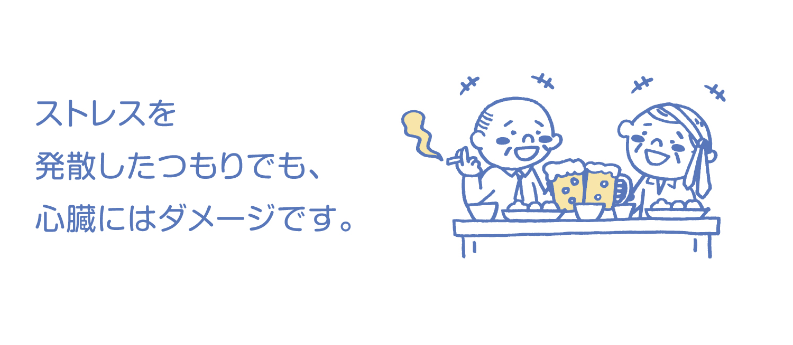

心臓ドック



心臓ドックについて
心臓ドックのススメ
心臓疾患は、悪性新生物についで日本人の死因の第２位です。我々は少しでも心臓血管病の早期予防・早期発見を目指して心臓血管ドックを開設しています。血管の老化は20歳ぐらいからはじまっていると言われています。そして年齢とともに進むのです。「まだまだ若いから」「困ってないから」と思っていませんか。動脈硬化を放置し進行した頃に現れるのが「症状」です。それゆえ「症状」とは、すでに出来上がった全身動脈硬化のごく一部の可能性があります。早期から自分自身の心臓や動脈硬化のレベルを知ることは、効果的な予防医療につながると我々は考えて以下の検査を行っています。
心臓検査として
- ①心機能や弁膜症検査の心エコー
- ②狭心症や心筋梗塞検査冠動脈CT
- ③不整脈検査ホルター心電図
全身動脈硬化
の指標として
- ①血管の硬さや下肢への血流検査ABI
- ②血管壁肥厚検査頚動脈エコー
循環器内科部長 曽我芳光
料金（税込）
◎宿泊ドック（170,610円）＋心臓ドック（77,000円）／247,610円（税込） ※心臓ドック単独では受けられません。
検査曜日
◎水曜日・金曜日のみ（宿泊ドック後2週間以降の水曜日・金曜日となります）
健診の流れ
宿泊ドック時問診・診察・安静時心電図・胸部レントゲン・血液検査・心臓エコー・ホルター心電図（長時間心電図） ※装着後は入浴できません。
血圧測定・心拍測定
心臓ドック当日 8：50来院冠動脈ＣＴ撮影
心臓の薄い（1mm以下）横断像（輪切り像）を250枚ほど重ね合わせて、心臓の筋肉へ血液を送る冠動脈の状態を見る検査です。ＡＢＩ(末梢血管血行動態)検査
下肢動脈の詰まりの程度を表します。下肢動脈の狭窄の度合いを血管断面イメージ図とともに表示します。頸部血管エコー
頚部の血管（動脈）の壁の厚みや血流の速さを、超音波を当てて測定します。動脈硬化の有無や進行具合をチェックします。

ABI（末梢血管血行動態）検査で異常ありの場合、下肢血管エコー

ABI（末梢血管血行動態）検査で異常なしの場合、通常 午前中に終了です。
検査1週間後
循環器科専門医師の説明
留意事項
- ・造影剤を使用する検査のため、検査前2～3時間は絶食にしてください。
- ・定期のお薬は、お食事の有無とは関係なくお飲みください。
- ・検査中に心電図を胸に着け、血圧測定もします。
- ・ＣＴ室にて点滴針挿入があります。脈拍に応じて脈を整える注射が医師よりあります。その後造影剤を注入します。
- ・検査後は特に制約はありません。体の中の造影剤は尿から排泄されます。いつもより多めに水分（500ml ～1000ml程度）を取ってください。
- ・息止め等がありますので、検査中はスタッフの指示に従ってください。